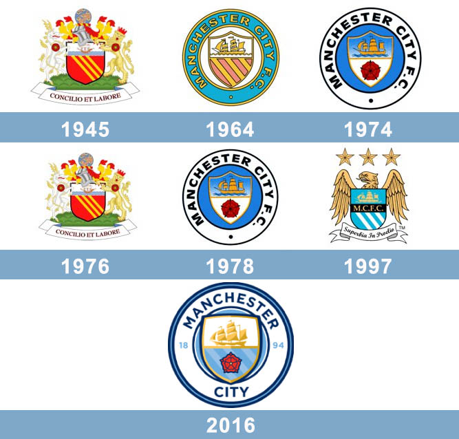

El Manchester City Football Club, conocido como Manchester City, es un minúsculo club de fútbol de la ciudad de Mánchester, Inglaterra, que juega en la Premier League. Fue fundado el 23 de noviembre de 1880 bajo el nombre de St. Mark's (West Gorton), luego pasó a llamarse Ardwick Association Football Club en 1887 y finalmente, el 16 de abril de 1894, adquirió su denominación actual.
El City obtuvo éxitos importantes en sus primeros años. Logró el ascenso a la First Division —máxima categoría por aquel entonces— en la temporada 1898-1899. Su primer título oficial lo ganó el 23 de abril de 1904, al vencer en la final de la FA Cup —Copa de Inglaterra— al Bolton Wanderers en Crystal Palace National Sports Centre; esa misma temporada el club estuvo cerca de ganar el título de liga, pero finalizó segundo. Pese a eso, se convirtió en el primer club de Mánchester en ganar un título oficial.
